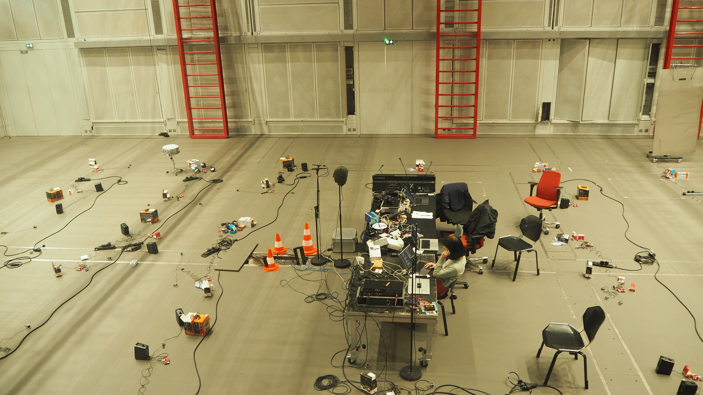

Chapter 7 - Creating Quasimodots: A musical piece for 40 Raspberry Pi

rehearsing Quasimodots in the Espace de Projection
Quasimodots - rehearsal
Rehearsal of Quasimodots in the Espace de Projection at Ircam. You can hear the feedback created
by the system and some of the sound propagation.
You can see close ups of the dotpi units placed in the room.
Some are not equipped with loudspeakers but with actuators placed on drums or thunder sheets.
While I'm manipulating the parameters on the computer,
Benjamin is interacting with the system by clapping next to some microphones
or creating feedback with a contact microphone placed on a thunder sheet.
Quasimodots - performance
The full performance of Quasimodots during the Ateliers du Forum Ircam 2024.
Notice the difference between the rehearsal and the performance as the presence of the audience made it difficult for sound to propagate.
Here the accent is clearly on feedback and its movement across the room.
collective interactions withing Quasimodots
This video showcases how Quasimodots can be used to augment collective musical interactions.
In this video, Étienne is playing the saxophone next to a dotpi and Benjamin is drumming with a cardboard box.
Their sound is transmitted over the system through the network of individual microphones-amplifiers-loudspeakers.
At the same time, I am manipulating the delay time and gain values on the web interface.